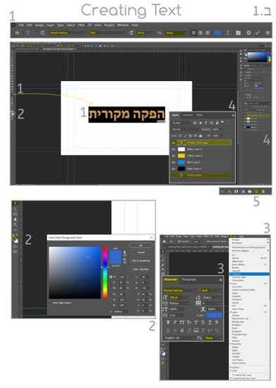
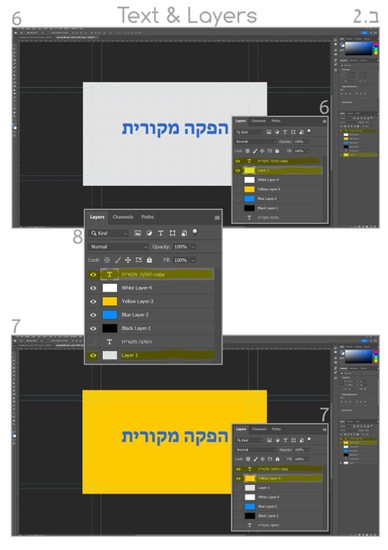
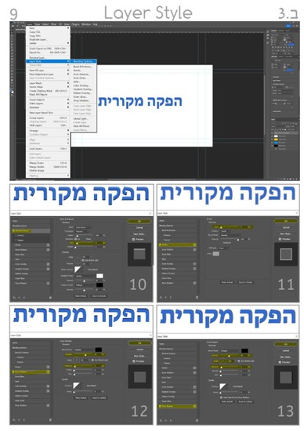
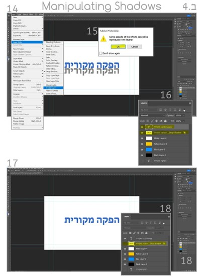
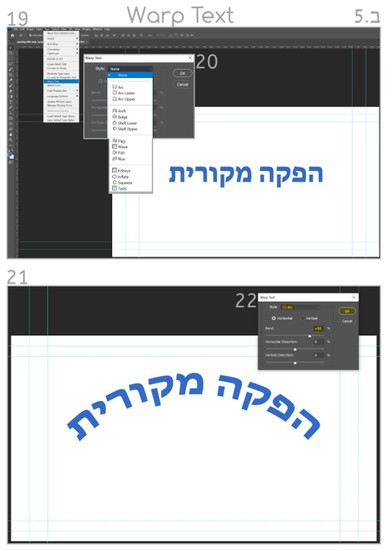

הצגת הנושא
בפרק זה נלמד להכיר את כלי הטקסט וניישם תהליכי יצירה טיפוגרפית וצבעונית לטקסטים שישמשו אותנו לכותרות בהפקות קולנוע וכחלק מתהליך העיצוב הגרפי.
חשיבות הנושא
טקסט וטיפוגרפיה הם מרכיב מרכזי בעיצוב כותרות בפתיחת סרט ובסיומו וכן בכל הקשור לתיווך המידע הוויזואלי המשרת את העיצוב הגרפי בדרך אל ההמונים. אפשרויות היצירה של טקסט לא מתקיימות רק בפוטושופ אלא יכולות "לנדוד" לתוכנות מרכזיות בתעשיית הסרטים כמו AE ו-PR.
תת-הנושאים ביחידה זו:
- ב.1 כלי הטקסט, בחירת צבע, הגדרות.
- ב.2 עבודה עם שכבות.
- ב.3 עבודה עם חלון סגנון השכבות.
- ב.4 הפרדת צל משכבת טקסט.
- ב.5 חלון עיקום הטקסט Warp Text.
- ב.6 שינויי צורה לטקסט Transform.
מטרות אופרטיביות
התלמיד יכיר את כלי יצירת הטקסט ואפשרויות עיצוב מקוריות לטקסט.
מושגים מרכזיים:
- יצירת טקסט
- צבעוניות
- עבודה בשכבות (בסיסי)
- יצירת צל
- עיקומי טקסט
- שינויי צורה לטקסט
ב.1 כלי הטקסט, בחירת צבע, הגדרות
יצירת טקסט באמצעות לחיצה על כלי הטקסט T.
- בשורת הפקודות העליונה יופיעו בלשוניות משמאל לימין: סוג הפונט, עוביו, גודלו וחדותו. הקלידו את צמד המילים "הפקה מקורית". לאחר שהקלדתם, תופיע שכבת טקסט בחלון השכבות. סמנו בעזרת כלי הטקסט את כלל האותיות בצמד המילים כדי לקבוע צבע.
- הקליקו על Set Background color ובחלון Color Picker בחרו צבע ואשרו.
- בזמן שהאותיות מודגשות (תנאי להחלת שינוי במילים) בשורת הפקודות העליונה לחצו על הלשונית Window ובחרו בחלון Character. בחלון זה תוכלו לתרגל שינויים מבניים בטקסט שבחרתם.
- שימו לב ששכבת המלל מופיעה מעל כל שאר השכבות שמתחתיה.
- לחצו על שכבת המלל וגררו אותה אל אייקון ה-+ בשורת האייקונים בסרגל הכלים התחתון שבמערך החלונות הימניים. פעולה מוצלחת תשכפל את שכבת הטקסט. עכשיו הקליקו על שכבת הטקסט המשוכפלת וגררו אותה אל תחתית מערך השכבות בפרויקט.
ב.2 עבודה עם שכבות
- הקליקו על כלי ה-+ פעם אחת כדי ליצור שכבה שקופה. העבירו את השכבה השקופה כך שתתמקם ראשונה מתחת לשכבת הטקסט. מצדה השמאלי של כל שכבה יש אייקון קטן של עין. לחיצה על העין משמאל לשכבה תעלים את השכבה. העלימו את כל השכבות שמתחת לשכבה השקופה. מה קיבלתם בתצוגה? העבירו את השכבה השקופה אל תחתית מערך השכבות ותפעילו חזרה את כל העיניים כך שכל השכבות יהיו גלויות. מה קיבלתם עכשיו בתצוגה?
- עכשיו שנו את מיקומי השכבות שמתחת לשכבת הטקסט כדי לשנות את צבע הרקע שמשמש אתכם בעיצוב הגרפי שיצרתם.
- על ידי תרגול חוזר תבינו את קונספט העבודה בשכבות ואת יחסי הגומלין במערכי השכבה שאתם יוצרים בתהליך העיצוב הגרפי.


ב.3 עבודה עם חלון סגנון השכבות
אפשרויות התמזגות בחלון סגנון השכבה
- חלון זה מציע סגנונות עיצוביים למלל שאתם יוצרים. אנחנו נתמקד בארבעה. כדי לפתוח את חלון Layer Style עליכם לבצע את סדר הפקודות הבא: Layer > Layer Style > Blending Option. חלון הסגנונות נפתח. שורת האפשרויות השמאלית מניבה את סגנונות העיצוב. כדי לבחור אחד עליכם לסמן את הריבוע הקטן שמופיע משמאל לסגנון שבחרתם.
- סמנו את הסגנון Bevel & Emboss ושחקו עם אפשרויות העיצוב בחלון ימין. עקבו אחר השינויים במלל, וברגע שאתם מרוצים אשרו בלחיצה על OK.
- סמנו את הסגנון Stroke וחזרו על ההנחיה המפורטת בשלב הקודם.
- סמנו את הסגנון Inner Shadow ותרגלו.
- סמנו את הסגנון Shadow ותרגלו.
ב.4 הפרדת צל משכבת טקסט
- נפתח שוב את חלון Layer Style ונבטל את פעולות העיצוב הסגנוני שקבענו למלל (ע"י ביטול סימון ה-V). נשאיר רק את סגנון הצל פעיל. כעת נפריד את הצל מהמלל ונהפוך אותו לשכבה עצמאית במערך השכבות (יש לוודא ששכבת הטקסט מסומנת ע"י לחיצה אחת עם העכבר): Layer > Layer Style > Create Layer.
- בחלון שהופיע נבצע אישור OK.
- עכשיו הצל הופרד והפך לשכבה נפרדת שמופיעה בחלון ניהול השכבות.
- עכשיו נוכל לתכנן לאן נרצה להזיז את הצל של המילים "הפקה מקורית".
- ע"י סימון שכבת הצל כפעילה נוכל לבחור את כלי ההזזה Move ולקבוע לשכבת הצל מיקום חדש במרחב העיצוב (נתרגל את סדר הפעולות כדי ליישמן בהמשך יישומי העיצוב שלנו).
ב.5 חלון עיקום הטקסט Warp Text
- נכיר את חלון עיקום הצל Warp Text ע"י סימון שכבת הטקסט כפעילה ומייד אח"כ: Type > Warp Text.
- נפתח לנו חלון עיקום הטקסט Warp Text, נלחץ על הלשונית None וייפתח לנו תפריט של אפשרויות לעיקום הטקסט.
- נבחר בעיקום מסוג Arch, נשנה את המחוונים ונבחר עיקום מתאים לטקסט.



ב.6 שינויי צורה לטקסט Transform
נכיר את פקודות השינוי מקבוצת Transform.
- ראשית נבצע המרה של שכבת הטקסט משכבה וקטורית (קווים רציפים) לשכבה פיקסלית (ריבועים קטנים). פעולת המרה זו נקראת רסטריזציה Rasterize והיא מיועדת בעיקר לכלי יצירה שלא מתאפשר ליצור בסביבתם אם לא נבצע את הפעולה. נדגיש את שכבת הטקסט (לא הצל), נלחץ על הכפתור הימני של העכבר, ובחלון שנפתח נלחץ על פקודת Rasterize Type Layer.
- את תוצאת המהלך נוכל לראות בחלון השכבות ובשכבת הטקסט שהשתנתה.
- עכשיו נוודא ששכבת הצל פעילה ולא מוסרת, ונבחר פעולת Transform על ידי ביצוע הפקודות: Edit > Transform > Perspective.
- שכבת הצל תיתחם במסגרת קווית שבכל קצה שלה עיגול קטן. לחצו עם העכבר על אחד מהעיגולים ומתחו לכיוון כלשהו כדי להבין את השינוי המתרחש. נסו לעצב זווית הטלת צל לצמד המילים "הפקה מקורית".
תרגיל מעשי מסכם
עליכם לעצב סדרה של חמש כותרות פתיחה לסרט עלילתי/תיעודי ולשמור את הכותרות כקובץ ייצוא לתוכנת Premiere.
הכותרות צריכות להכיל את המידע הבא:
- כותרת ראשונה – המכללה הטכנולוגית אורט גבעתיים מציגה.
- כותרת שנייה – סרטם של... (שמות מלאים של במאי, צלם, עורך).
- כותרת שלישית – שם הסרט (כותרת מעוצבת לתוכן שם הסרט).
- כותרת רביעית – כותרת פתיחה המתייחסת למקום, יום ושעה בעבר.
- כותרת חמישית – כותרת פתיחה לאירוע שעומד להתרחש.
סדר הפעולות:
- פתחו פרויקט עבודה חדש.
- הגדירו את הפרויקט לרזולוציה של HDTV 1080p.
- ודאו שהשכבה הראשונה שיצרתם היא שכבה שקופה.
- השכבה הראשונה שיצרתם תיקרא "כותרת פתיחה 1".
- השכבה השנייה שיצרתם תיקרא "כותרת פתיחה 2".
- כך תפתחו שכבת עבודה נפרדת לכל אחת מחמש הכותרות.
- לפני תחילת תהליך העיצוב תכינו תיקייה ובה תשמרו את הפרויקט כקובץ PSD.
- ישמו בעיצוב הכותרות את כלי העיצוב שלמדתם בפרק זה בחלון Layer Style, בחלון העיקום Warp וכן בקבוצת פקודות Transform.
- הקפידו לבצע שמירה בכל שלב שבו התקדמתם בעיצוב.
- התיקייה ובה יישומי התרגיל שמורה כקובץ PSD ותשמש אתכם בהמשך.